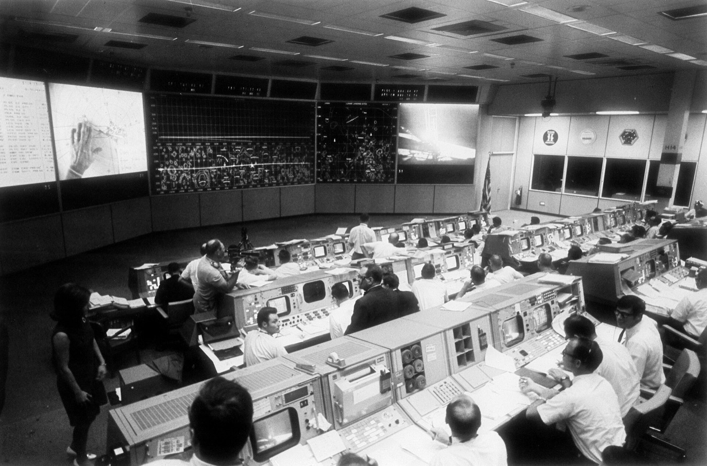

Nanominds builds AI that moves a business to a declared state — and holds it there.
Scroll↓Intelligence has become abundant. Results have not. With every model release, the gap between what AI can do and what organizations get done grows wider. The bottleneck is no longer capability — it is how work is organized: goals broken into tasks, tasks handed to tools, tools supervised by people. Throughput stays capped by human attention.
This has happened before. In 1961, the most famous outcome in history was declared in a single sentence — a target, a guardrail, and a deadline: land a man on the Moon, and return him safely, before the decade is out. The rocket that would do it had not yet been designed. What made the sentence come true was the machinery built around it: rooms that watched the true state of the mission, corrected course continuously, and knew exactly when to go, when to wait, and when to abort. Four hundred thousand people, reorganized around one declared state.
We organize work around outcomes instead. An operator declares a target and its limits — cut churn to five percent while customer satisfaction holds — and the system runs the loop: measure, act, verify, undo what fails. Continuously, for months. Less copilot, more mission control.
Owning an outcome is not the same as completing tasks. The system must hold a goal through weeks of noise. It must ground every action in the true state of the organization, not a dashboard’s version of it. It must learn the constraints nobody wrote down. And it must know when to act, when to wait, and when to undo.

When outcomes become the interface, people stop translating goals into tasks. Those who know the work declare what must become true, and the system does the rest — the breaking down, the doing, the checking. The organizations that pull ahead will be the ones that reorganize this way first. That is how abundant intelligence becomes abundant results.
We obsess over realized value, not benchmarks. We are paid when the number moves.
The intelligence is here. What’s missing is the loop that turns it into results. We are building that loop. More soon.
If you own a number and want it moved — or if you want to spend your career on this problem — write to us.